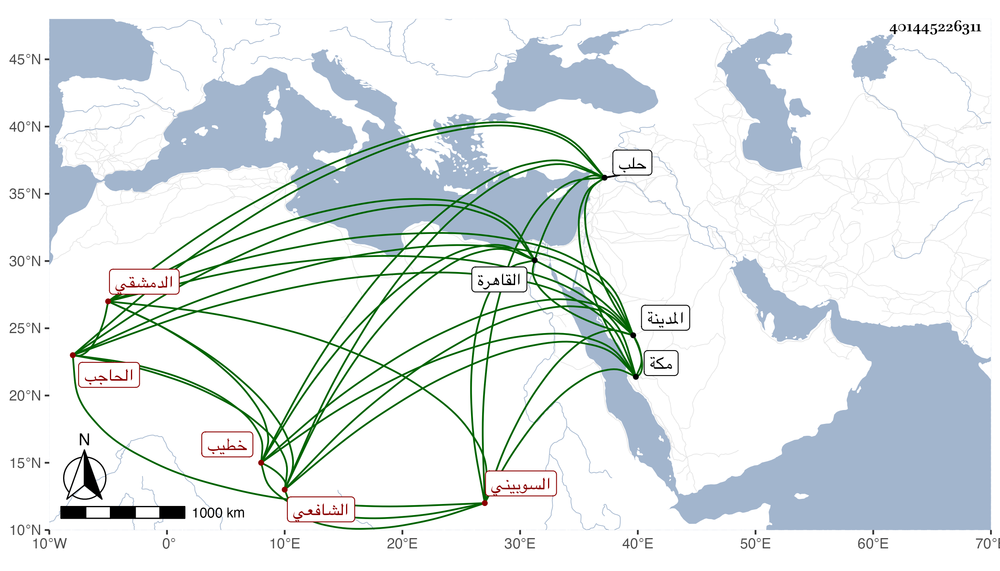

0902Sakhawi.DawLamic.ITO20230111-ara1.EIS1600.401445226311
Biography ID: 401445226311
إبراهيم بن محمد بن إبراهيم بن أحمد بن إبراهيم البرهان السوبيني الأصل الدمشقي الشافعي قريب البرهان السوبيني المذكور ويعرف بابن الخطيب وكذا بالخطيب لكونه خطيب جامع برسباي الحاجب . مولده في شوال سنة خمس وأربعين وثمانمائة ونشأ فحفظ القرآن والشاطبية والمنهاج وألفية النحو وقال أنه عرض واشتغل وحج وجاور مرارا ودخل حلب فما دونها ولقيني بمكة مع الشهاب الأخصاصي ثم بمنزلي في القاهرة مع ابن القارى وسمع علي بعض البخاري وتناوله وأجزت له ولبنيه المحيوي أبي الفتح محمد والجمال أبي السعود محمد المدعو نزيل الكرام لكونه ولد بالمدينة والفخر أبي بكر والنجم أحمد المدعو ياسين وأم الهنا فاطمة وست الكل أساء ولا بني أخته البدر محمد وعائشة ابني محمد بن العجمي ولموسى بن عبد الله بن المغربي وكتبت لهم إجازة .
